Tutte le versioni di Deriva, dalla più recente alla prima: 26 tappe.
1.22.1Cannoni a posto
7 novembre 2026
Sistemati il cannone da terra, il pavimento del mastio e i colori dei personaggi nuovi.
- Il cannone da terra non si colpisce più da solo: prima la palla appena uscita dalla canna lo prendeva in pieno e lo faceva saltare.
- A e D, e anche il mouse, girano la canna dalla parte giusta.
- Il pavimento del mastio era una lastra alta mezzo metro sopra quello calpestabile: guardie, forziere e tappeto ci sparivano dentro. Ora è alla stessa altezza.
- Nella versione per Windows i personaggi nuovi (guardie, Morak, Arissa, Erika, la piratessa) comparivano bianchi: le loro texture ora si caricano in un altro modo e hanno i loro colori.
- Con la ciurma a bordo, in basso restano scritti i comandi: O per gli ordini, poi un numero da 1 a 9; la prima volta un avviso lo spiega.
1.22La tua ciurma
7 novembre 2026
Gli abitanti si reclutano e salgono sulla tua nave; castelli, villaggi e covi si smontano a blocchi.
- Recluta: parlando con un abitante si apre la scheda Recluta, con il suo mestiere (cannoniere, carpentiere, nostromo o combattente), il prezzo e la paga di ogni giorno. Dopo tre giorni senza paga se ne va.
- La ciurma ti segue a terra e sale da sola sulla tua nave, fino ai posti che la nave ha (dal galeone in su sono tanti). Con O si apre il menu degli ordini: fuoco a volontà, solo a sinistra o a destra, cessate il fuoco, riparate lo scafo, più vele, ammainate, arrembaggio, seguitemi.
- All’arrembaggio i combattenti saltano sulla nave pirata vicina: se vincono, la nave diventa tua.
- Tutto si smonta: il piccone rompe la pietra, l’ascia il legno. Castelli, villaggi e covi si aprono a blocchi di 3 metri, che spariscono davvero (si passa attraverso) e danno muri e pavimenti da ripiazzare dove vuoi. Anche letti, falò e bauli dei villaggi, tranne quelli chiusi a chiave.
- Laguna: vicino alle isole calde l’acqua bassa è turchese e limpida, con i riflessi del sole che si muovono sul fondo.
- Neve con la sua trama e il suo rilievo; i banchi di ghiaccio hanno i bordi morbidi e uno spessore vero.
- Pozzo con verricello, corda e tettoia; bancarella con il bancone, la tenda a strisce, le cassette di frutta e le ceste; cassero del vascello con pareti inclinate, finestre e una poppa scolpita.
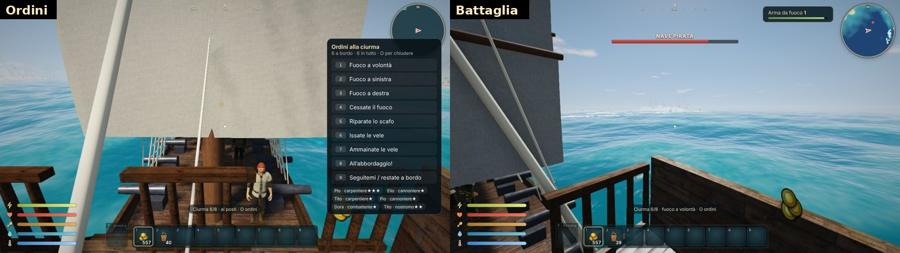
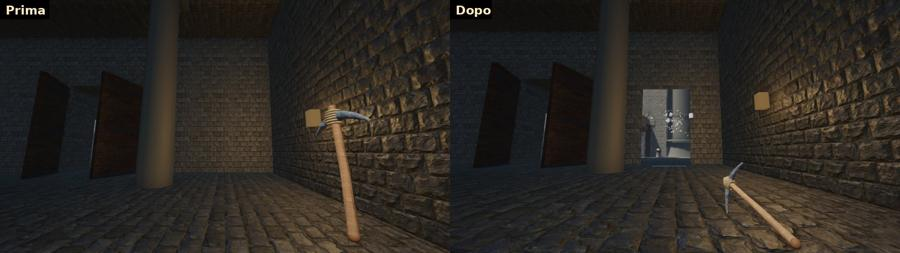
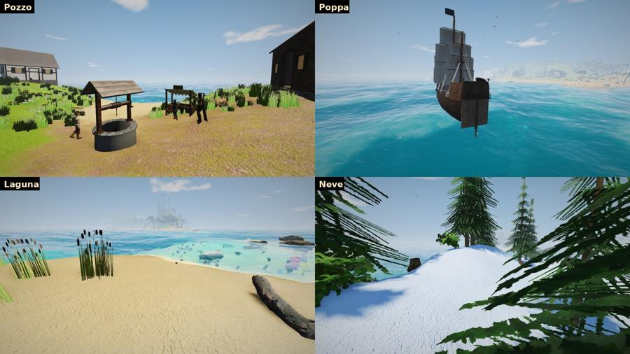
1.21.2Tetti a 45 gradi
6 novembre 2026
Tetti più ripidi, il frontone rifatto e il mastio senza la lastra finta.
- Il tetto sale di 3 metri su 3, a 45 gradi; anche quelli già costruiti.
- Il frontone è un muro tagliato in diagonale a 45 gradi, con lo stesso bordo di legno del muro: due affiancati chiudono il triangolo sotto il tetto.
- Castello: le cornici del mastio erano lastre piene, senza collisione, che tagliavano l’ingresso e l’interno a 3, 12, 21 e 30 metri. Ora girano solo fuori, sulle pareti, e si fermano davanti al portone.
1.21.1Gente nuova
6 novembre 2026
Personaggi animati veri, costruzioni più comode e il gioco che si aggiorna da solo.
- Nuovi personaggi animati (Mixamo): cavaliere e paladino fanno la guardia nel cortile dei castelli; Morak, Arissa, Erika e la piratessa sono i nemici di covi, villaggi abbandonati e navi; le donne dei villaggi sono Arissa ed Erika. Si fermano, camminano, corrono, attaccano con due colpi diversi e reagiscono quando li colpisci.
- Costruire è più comodo: se vicino c’è già una costruzione, il pezzo nuovo segue la sua griglia (anche quella di castelli e villaggi), va nella cella o sul bordo libero più vicino e si mette anche guardando nel vuoto accanto a un pavimento.
- Tetto largo quanto la cella: due falde affiancate non si incrociano e il colmo non fa più la X. Scala nuova di 12 gradini, alta quanto un muro, con corrimano.
- Nuovo pezzo, il frontone: chiude il triangolo sotto il tetto e si gira da solo verso il colmo.
- I suoni registrati tornano a funzionare (nella 1.21 si perdevano se l’audio partiva prima della fine del caricamento).
- Controlla aggiornamento, nel menu: sul PC scarica dal sito solo i file cambiati e riavvia il gioco; nel browser ricarica la pagina.
- Prossimamente, nel menu: cosa arriverà nei prossimi aggiornamenti, e un modulo per mandare proposte e segnalazioni.
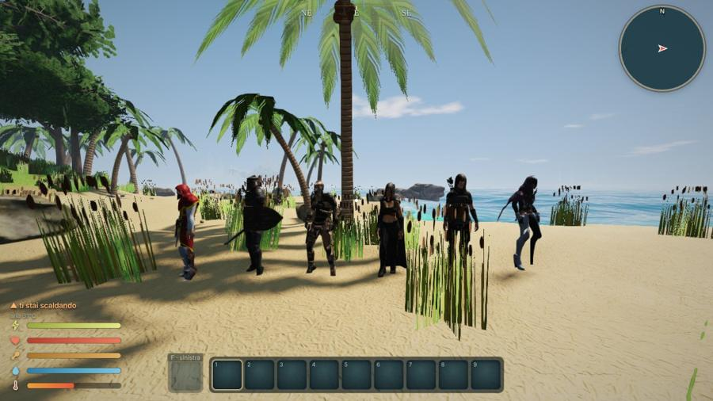
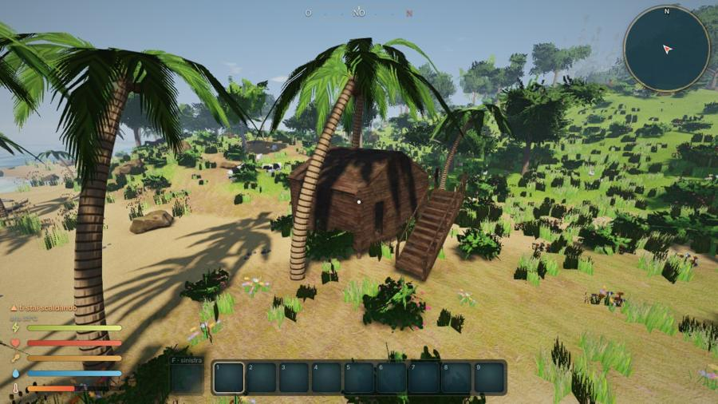
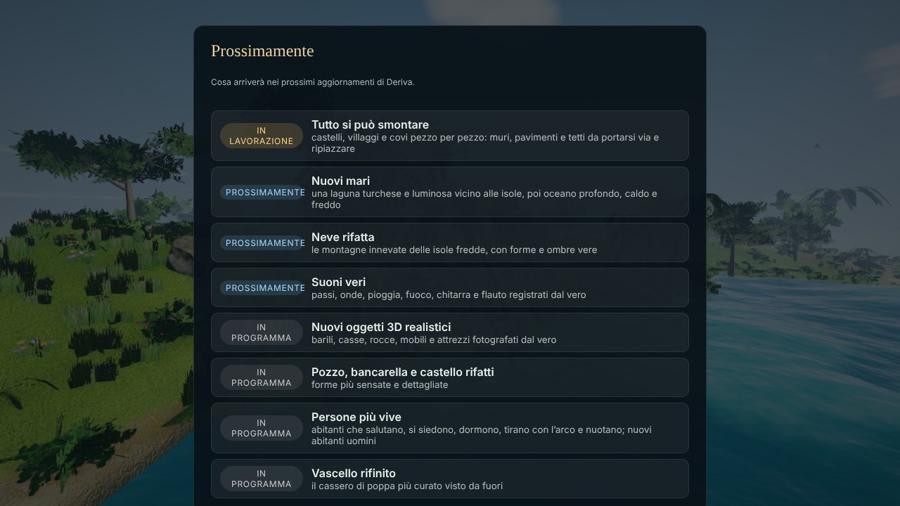
1.21Navi da abitare
3 novembre 2026
Cassero, castello e cabine sulle grandi navi, il cannone da terra, il libro da sfogliare, la terza persona e il mare turchese.
- Galeone e vascello rifatti: a poppa e a prua ponti rialzati con ringhiera e due scale, e sotto una cabina con la porta, il tavolo, la panca e una lanterna che si accende entrando. A poppa le finestre della galleria e la balconata.
- Nel vascello si scende nella stiva camminando, dalla scala del boccaporto, e si risale allo stesso modo.
- Cannone da terra su un affusto a quattro ruote: posalo, poi tasto destro per metterti dietro (mouse o A e D per girarlo, W e S per alzarlo, clic sinistro per sparare). Le palle aprono crateri diversi in roccia, sabbia e terra e danneggiano le costruzioni.
- Il libro del costruttore si sfoglia: indice, barca libera, una doppia pagina per ogni barca dalla zattera al vascello, e in fondo il ricettario.
- F5 cambia visuale: prima persona, terza persona da dietro e di fronte.
- Sott’acqua turchese e limpido, con bollicine lucide che salgono e fasci di luce.
- Frutta e pane fotografati in 3D (ambientCG): pane, limone, pera, mango, anguria, avocado e kiwi, dai mercanti e ai banchi del mercato.
- Nuovi simboli disegnati a tratto al posto delle emoji, in tutto il gioco: meteo, luna, mappa, abilità, temperatura.
- Foreste più fitte, terreno lontano più chiaro, scavi regolari, animali che seguono il pendio, livello di abilità al centro dello schermo, freccia della mappa nella direzione del personaggio, scafi e bauli più rotondi. La musica del menu parte subito; T apre la chat senza il menu.
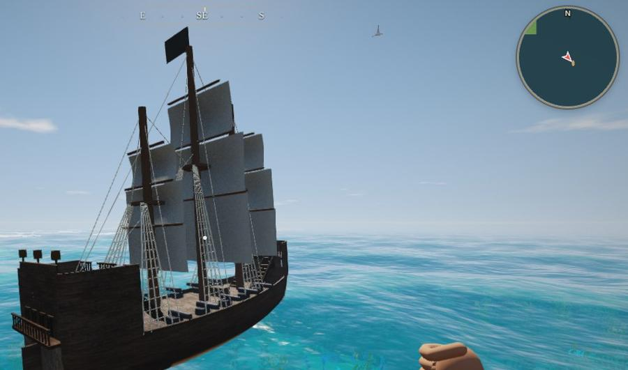
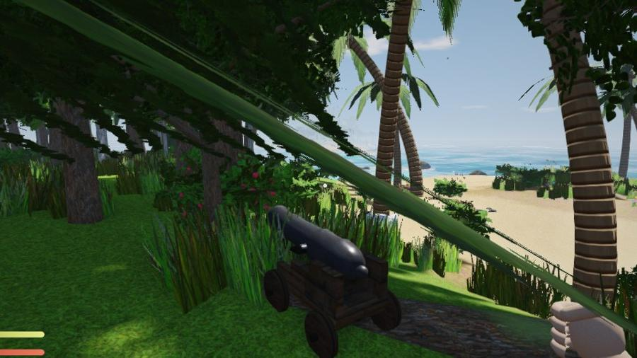
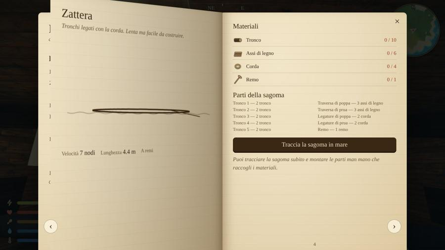
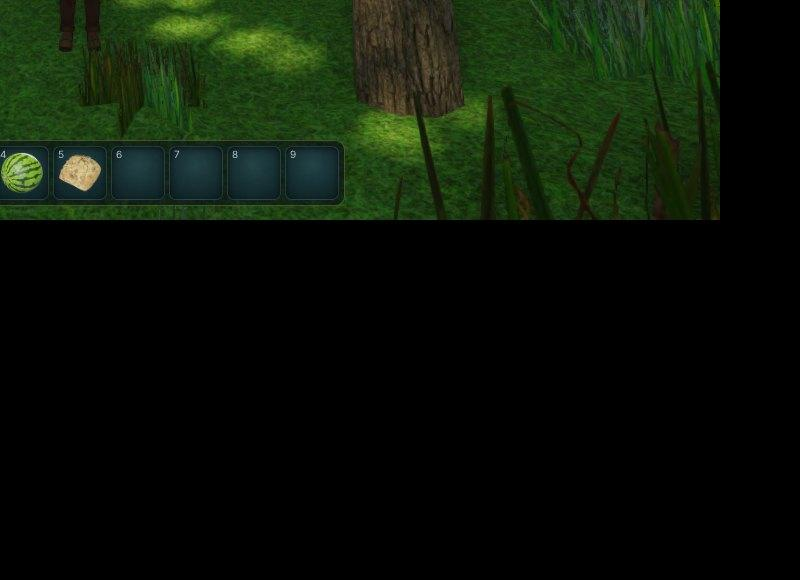
1.20Cavalli e stive
3 novembre 2026
Si cavalca, si scassina, si suona; il vascello col ponte di sotto; texture fotografiche ovunque e la modalità Shaders.
- Cavalcature: cavalli, zebre e lama. Con la sella in mano (pelle e corda) tasto destro sull’animale; W al passo, Ctrl galoppo (stamina del cavallo), Spazio salta, Maiusc per scendere. L’animale resta lì ed è tuo.
- Lucchetti: i bauli dei villaggi abitati sono chiusi. Accovacciato e senza farti vedere, E per scassinare: il mouse muove il grimaldello, D o il tasto destro gira la serratura; forzando altrove il grimaldello si spezza. La Furtività allarga il punto giusto. Grimaldelli: lingotto di ferro e bastone, o dai mercanti.
- Navi: vele che sventolano, sartie per salire sugli alberi fino alla coffa. Nuovo vascello, la nave più grande, con il boccaporto e il ponte di sotto (cannoni, barili, casse, lanterne). Il progetto si trova nei tesori, nel bottino dei pirati o dai mercanti.
- Strumenti: chitarra (legno e corde; clic sinistro pizzica, destro cambia accordo) e flauto d’osso di gallina (clic sinistro soffia, guarda su o giù per la nota). Gli altri giocatori ti sentono.
- Multigiocatore: partite pubbliche o private; nel menu la lista delle partite aperte, con filtri e ricerca.
- Texture fotografiche ambientCG (CC0) su terreno, alberi, foglie, erba, navi, cannoni, case, castelli e attrezzi, con rilievo e ruvidezza veri: 2K su Alta e Ultra, 1K sulle altre qualità e sul telefono. Nuova qualità «Patata» con le texture di prima, per i computer più deboli.
- Shaders (Impostazioni → Grafica): luce volumetrica, bagliore, foschia in lontananza, colori caldi, pulviscolo nel sole, pollini e lucciole. Corretto il mare lattiginoso in qualità Alta.
- Nella pagina principale suona il tema di Deriva, con la scheda delle novità.
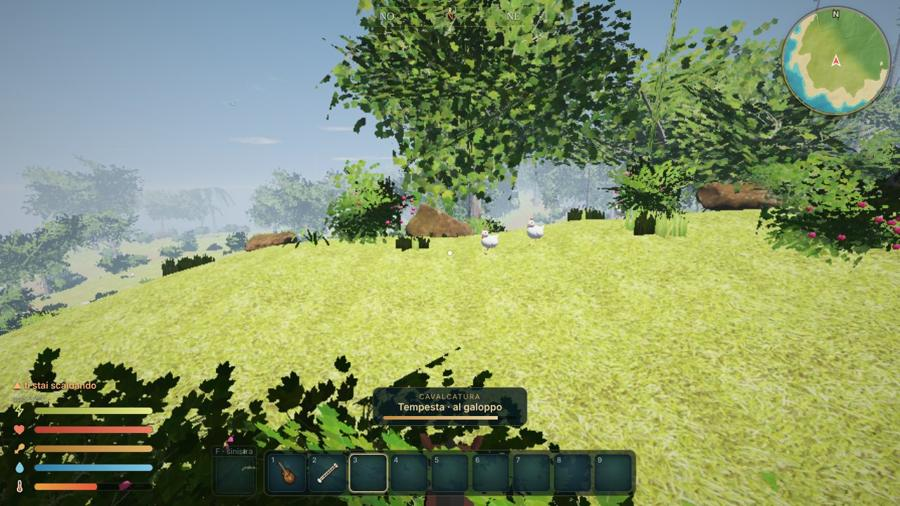
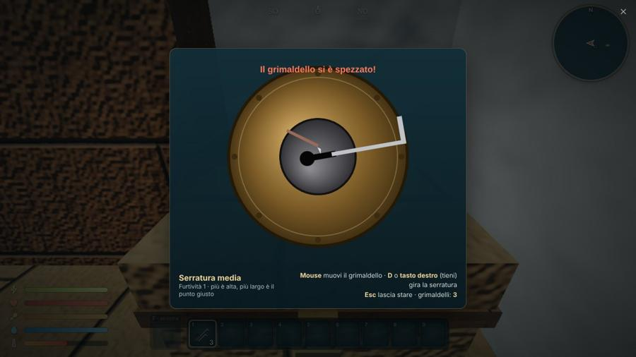
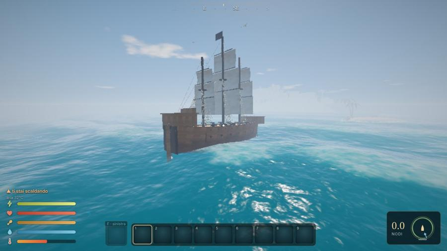
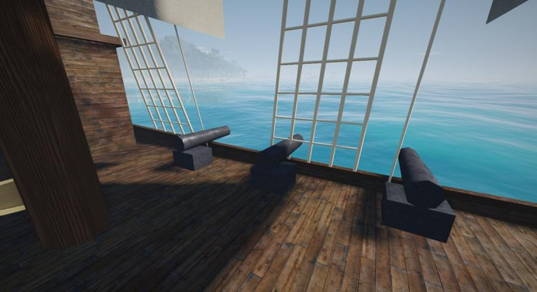
1.19.1Il ponte di comando
29 ottobre 2026
Primo sotto-aggiornamento: il menu Giocatori per chi comanda la partita.
- Da qui in poi i piccoli aggiornamenti hanno un terzo numero: 1.19.1, 1.19.2… Le novità grandi passano a 1.20.
- Menu Giocatori (tasto P), solo per chi ospita e per gli operatori: salute, fame, sete, stamina, ossigeno e temperatura; invincibile, creativa per un solo giocatore, volo, fame e sete bloccate, invisibile ai nemici; portalo da te, vai da lui, al suo letto o alle coordinate; dai oggetti, cura, svuota l’inventario, espelli; e le 8 abilità con − e +.
- Tutto anche da comando: /giocatore Nome fame 50, /giocatore Nome invincibile si, /giocatore Nome abilita spada 10, /giocatore Nome tp… Ogni modifica compare nella console degli operatori.
- Comandi più facili: mentre scrivi compaiono in trasparenza i comandi possibili e poi i valori che seguono (giocatori, oggetti, luoghi, meteo…); in grigio il completamento, Tab per accettarlo, ↑ ↓ per scegliere.
- Teletrasporti a rotazione: ripetendo lo stesso luogo (anche dal pannello K) si va al successivo più vicino invece che sempre allo stesso.
1.19Ladri e cannonieri
29 ottobre 2026
Ai cannoni del galeone, rubare senza farsi vedere, e otto abilità che crescono con te.
- Cannoni del galeone utilizzabili: avvicinati, tasto destro e sei in postazione. A D (o il mouse) girano la canna, W S la alzano e abbassano, clic sinistro spara. Il mirino mostra rotazione, alzo, gittata, munizioni e ricarica; tasto destro per lasciarlo.
- Nuovi comandi: Ctrl per correre, Maiusc per accovacciarsi. Correre consuma la nuova stamina (barra gialla col fulmine), che si ricarica da fermo.
- Furto: accovacciato, un occhio sopra il mirino ti dice se qualcuno ti vede. Nascosto, con E rubi frutta dai banchi dei mercanti o dobloni dalle tasche degli abitanti (da dietro). Se ti vedono, il villaggio ti insegue e ti attacca.
- Otto abilità, da 1 a 50 (L o la scheda Abilità accanto all’inventario): Spada, Parata, Arma da fuoco, Arceria, Furtività, Corsa, Contadino, Allevatore. Crescono facendo, e ognuna migliora quello che fai.
- Nuova frutta: mele e arance. I cannoni del galeone ora hanno la bocca verso il mare.
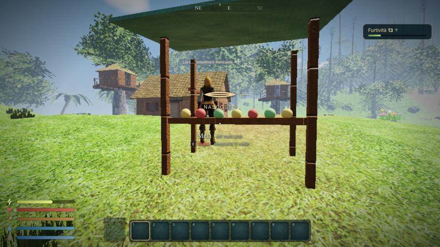
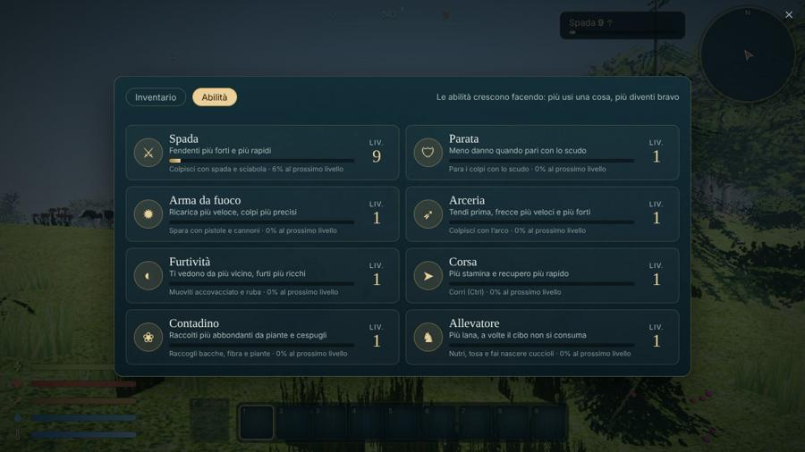
1.18Tutto al suo posto
29 ottobre 2026
Animali col muso davanti, bancarelle ferme, la modalità la decide chi ospita.
- Animali: camminano e corrono davvero in avanti. Pecore, maiali, cani e lama usano le animazioni di altri animali, che hanno la coda: quei movimenti finivano sul corpo intero e lo giravano al contrario. Ora ogni animale prende solo le ossa che ha.
- Bandiere, tende da sole e stoffe sono ancorate: col vento increspano sul posto di pochi centimetri, senza volare via. La frutta dei mercanti resta ferma sul banco.
- La modalità creativa la può mettere solo chi ospita la partita (anche dal pannello K e dai comandi).
- Musica 6 dB più forte.
1.17Il ruggito degli abissi
28 ottobre 2026
Pirati e Kraken con la loro voce, e suoni che restano nel loro punto.
- Voci registrate dei pirati: grida, urla di dolore quando li colpisci, grido d’attacco col fendente; l’equipaggio grida dalla nave, i naufraghi in acqua.
- Kraken registrato e molto più forte: ruggiti, gemiti, la morte, i tentacoli che si muovono e il tonfo vero quando si abbattono.
- Nuovi suoni veri: mangiare, bere, l’arco che si tende e scocca, gli abitanti che ti salutano; il cuore batte quando sei grave, il fiato si fa corto dopo una lunga corsa o un’apnea.
- Suoni nello spazio: restano dove nascono anche se ti giri; e ogni volta cambiano appena d’intonazione (±10 cent).
Le prime registrazioni della colonna sonora di Deriva.
- Versi registrati di mucca, pecora (e agnello), maiale, gallina e orso, con i lamenti di mucca e maiale quando li colpisci.
- L’ululato del lupo si sente solo da lontano, di notte; da vicino il lupo ringhia.
- Prima musica del gioco: il tema del castello, che sale piano quando ti avvicini e sfuma quando te ne vai.
- Nuovo volume “Musica” nelle impostazioni audio. Dove manca una registrazione resta il suono di prima.
1.15Gemme della roccia
28 ottobre 2026
Minerali in rilievo.
- Carbone, ferro e oro escono dalla parete come cristalli: scaglie nere, ematite rossa, cristalli e pepite d’oro che luccicano.
1.14Sotto i piedi
28 ottobre 2026
Caverne nascoste ovunque.
- Sotto tutta la terraferma, a pochi metri di profondità, tantissime caverne chiuse collegate da gallerie.
- Scavando, il piccone “rimbomba” vicino a un vuoto; il gioco avvisa quando ci sbuchi dentro.
- Stalattiti e stalagmiti più naturali.
1.13Il ventre della montagna
28 ottobre 2026
Grotte vere, miniere più grandi, barche alla deriva.
- Grotte naturali sui fianchi delle montagne: gallerie, cunicoli, caverne con pozze, stalattiti, muschio, funghi luminosi, pipistrelli, aria fresca.
- Miniere con gallerie laterali e un livello inferiore; vene sulle pareti.
- Barche vere e usabili ai pontili dei villaggi.
- Deriva: senza ancora la barca va col vento (X getta e salpa l’ancora).
- Il catalogo della creativa resta dov’eri; animali girati nel verso giusto.
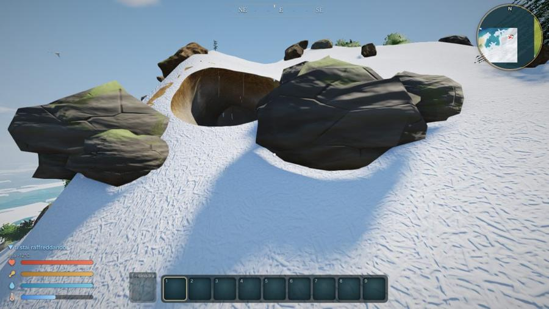
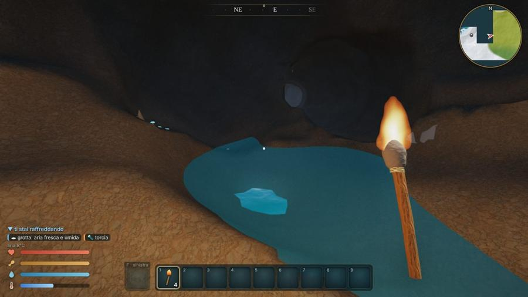
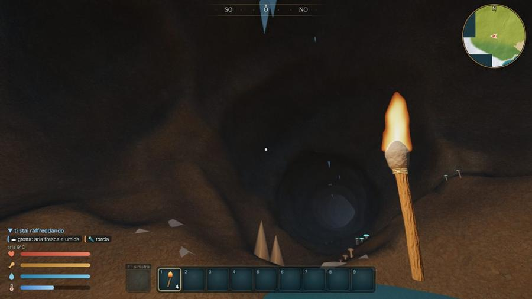
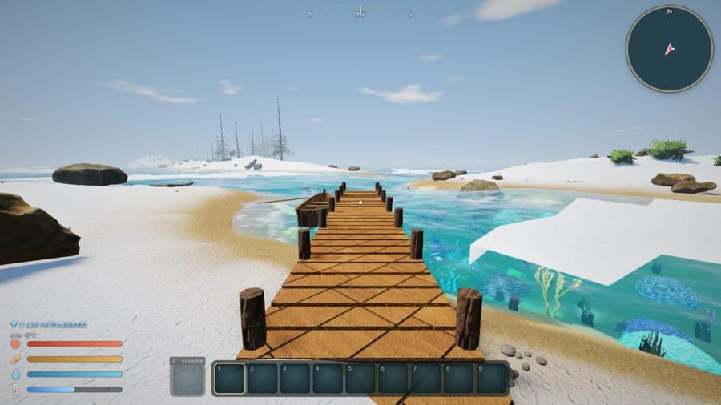
1.12Gente di mare
28 ottobre 2026
Persone vere e un galeone pirata da abbordare.
- Persone con vestiti veri, volti, capelli e barbe diversi, animate: abitanti, pirati e gli altri giocatori.
- Il galeone pirata è una nave vera: ci si sale a bordo; quando affonda i pirati scappano a nuoto.
- Cannoni utilizzabili uno per uno; vele del galeone più alte; riparazioni che costano più legno.
- Terra da rimettere nei buchi, barili, torcia dalla mano sinistra, gradini delle case più facili.
- Pannello K con tutti i comandi in categorie; minimappa; F3 schermata tecnica; F2 istantanee in Immagini\Deriva.
- Mappa condivisa in multigiocatore; morte: si perde l’inventario, a meno che chi ospita scelga “Tieni l’inventario”.
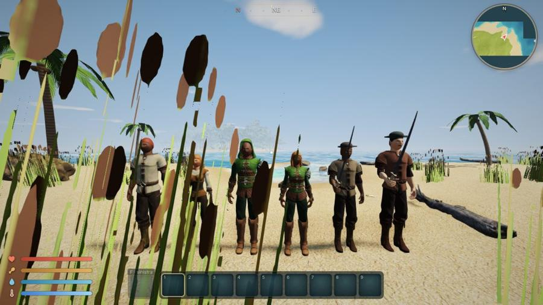
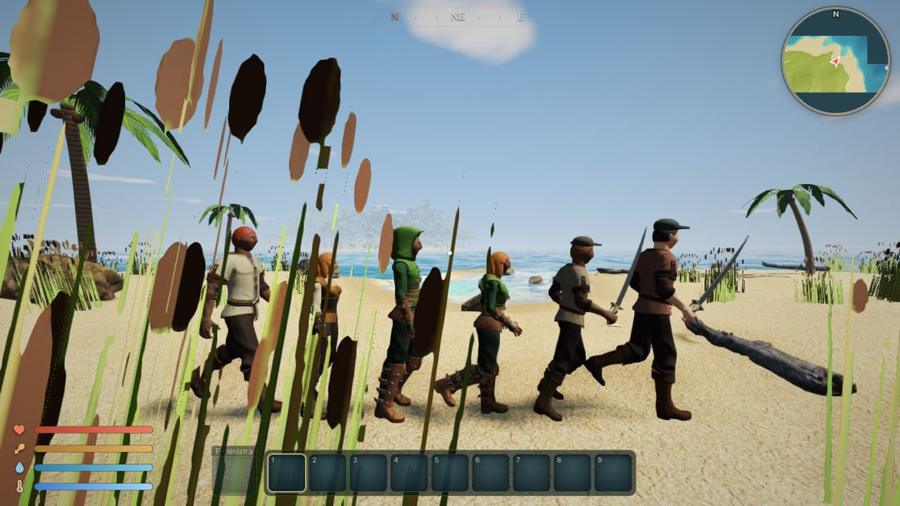
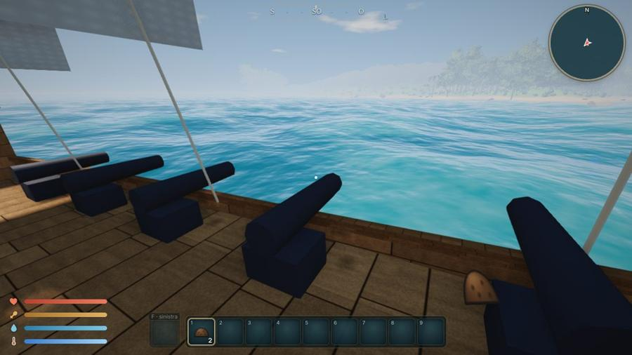
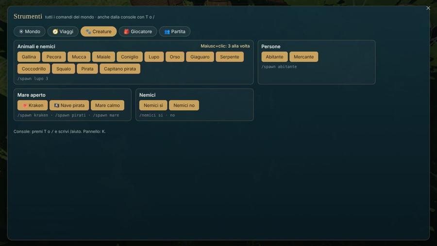
1.11Mostri del mare
28 ottobre 2026
Kraken, pirati, animali veri e decine di miglioramenti.
- Kraken e navi pirata in mare aperto; scafo che si danneggia e si ripara; cannoni del galeone.
- Oggetti lasciati a terra (Q) e raccolti passandoci sopra: così ci si passano le cose.
- Animali animati nuovi (mucca, pecora, maiale, cavallo, lama, zebra, cane); utensili di legno; ferro e oro nella roccia.
- Temperatura spiegata a schermo, falò che scalda davvero; fame e sete più lente; onde che seguono il vento.
- Castello solo sulle montagne alte, con torce, catene, portoni, cripta e trappole.
- Arco caricabile, scudo in entrambe le mani, danno scritto per ogni arma, crepe a ogni colpo, buchi irregolari.
- Coordinate, /tpda per raggiungere un amico, operatori, chat vocale ovunque o di prossimità; vegetazione molto più fitta.
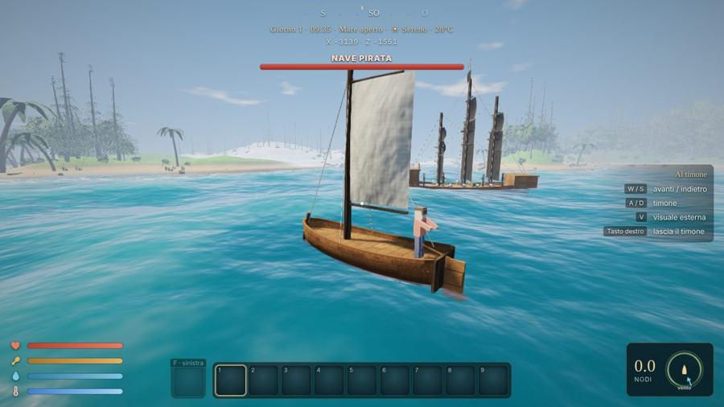
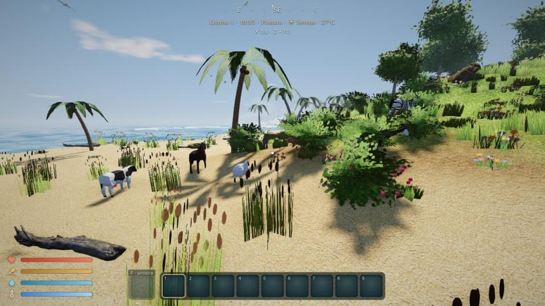
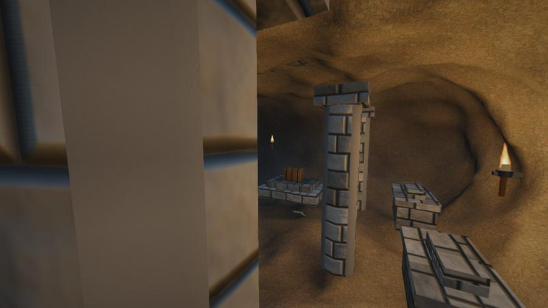
1.10La notte e il castello
27 ottobre 2026
Notti dark fantasy e castelli giganteschi.
- Notte dark fantasy: cielo blu-viola, nebulose, nuvole argentate, grande luna rossa (o argento).
- Castelli rarissimi e giganteschi, a doppia cinta di mura, con mastio gotico e forzieri ricchi.
- Menu nuovo a categorie, impostazioni a schede; inventario rapido della creativa (1–8).
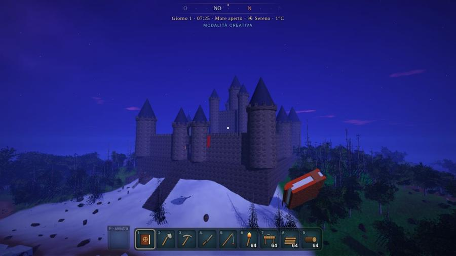
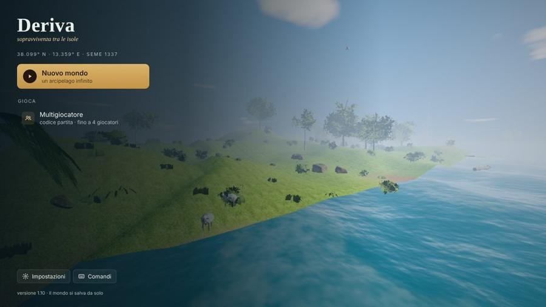
1.9Lontano all’orizzonte
27 ottobre 2026
Il cannocchiale.
- Cannocchiale con ingrandimento ×2–×8 e distanza di ciò che guardi.
1.8Costruttori
27 ottobre 2026
Barche libere, case di pietra, minerali e voce.
- Barca libera: si costruisce pezzo per pezzo sull’acqua, con peso, inclinazione, stabilità e ribaltamento.
- Case di pietra, camino e fornace; vene di carbone, ferro e oro; lingotti e attrezzi di ferro.
- Ricettario con ricerca; chat vocale di prossimità; il tasto destro per interagire.
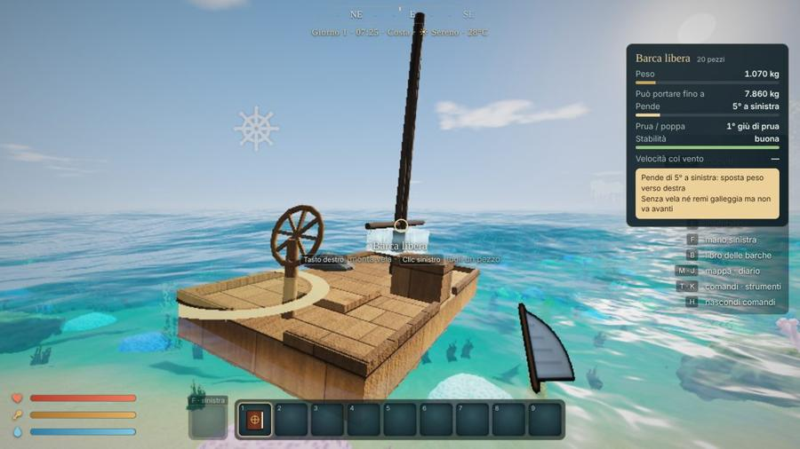
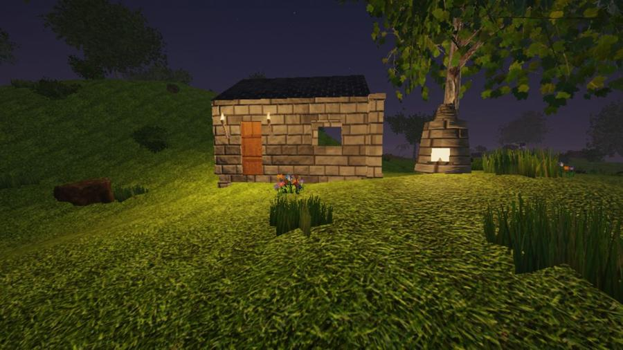
1.7Il codice funziona
27 ottobre 2026
Collegarsi agli amici è affidabile.
- Nuovi server per il codice partita (due, se uno è giù si usa l’altro).
- Se il collegamento diretto non riesce, i dati passano dal server: funziona anche con le reti più chiuse.
1.6.1Il suono del mare
24 ottobre 2026
Tutto l’audio rifatto, con sei volumi separati.
- Ambiente diverso per bioma, uccelli e animali con il loro verso, passi su ogni terreno.
- Eco in grotta, gocce, pioggia sul tetto; i suoni arrivano da dove sono.
Deriva si gioca anche dal telefono.
- Versione nel browser: danielemazze.github.io/Deriva, lo stesso gioco di Deriva.exe.
- Comandi touch; dal telefono si entra nella partita di chi ospita col codice.
1.5Terra, cielo e sottosuolo
22–23 ottobre 2026
Meteo, scavo, biomi estremi e un mondo più vivo.
- Mano sinistra (torcia, scudo, cibo, cannocchiale) e vestiti contro caldo e freddo.
- Meteo vero: pioggia, temporali con fulmini, caldo torrido, neve; fasi lunari; gorghi in mare aperto col vento forte.
- Nuovi biomi: neve con mare ghiacciato e vulcani con lava e ossidiana; laghetti di montagna con cascate.
- Scavo con piccone e pala: tunnel, cantine, case dentro la montagna.
- Trappole, animali che ti seguono e si riproducono; rovine, miniere e accampamenti con forzieri.
- Console dei comandi (T) e pannello Strumenti (K); grafica adattiva.
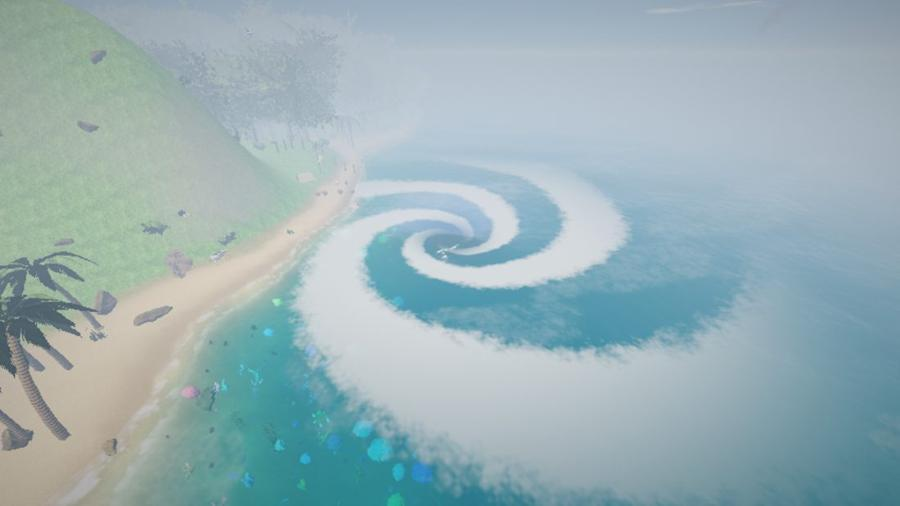
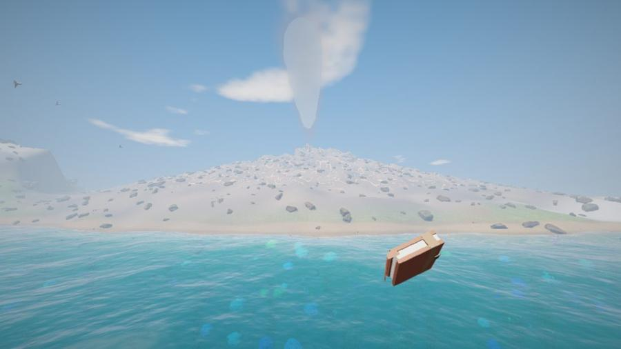
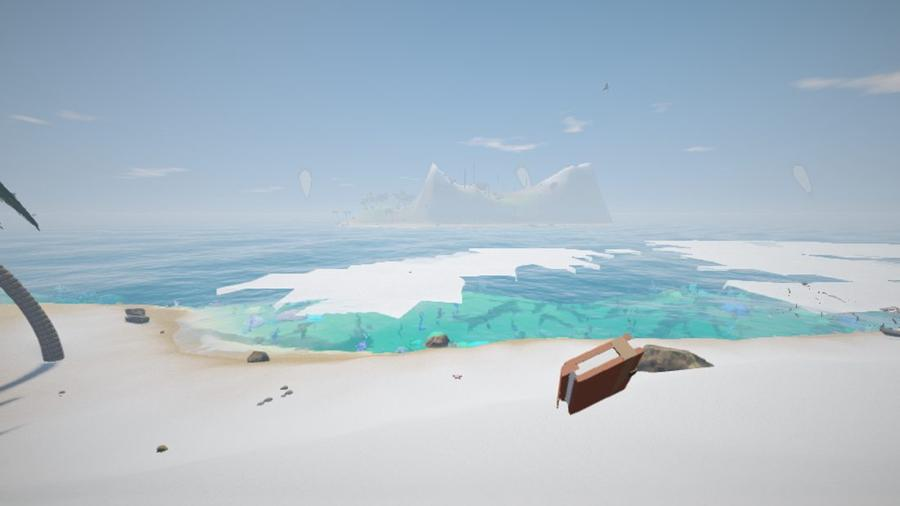
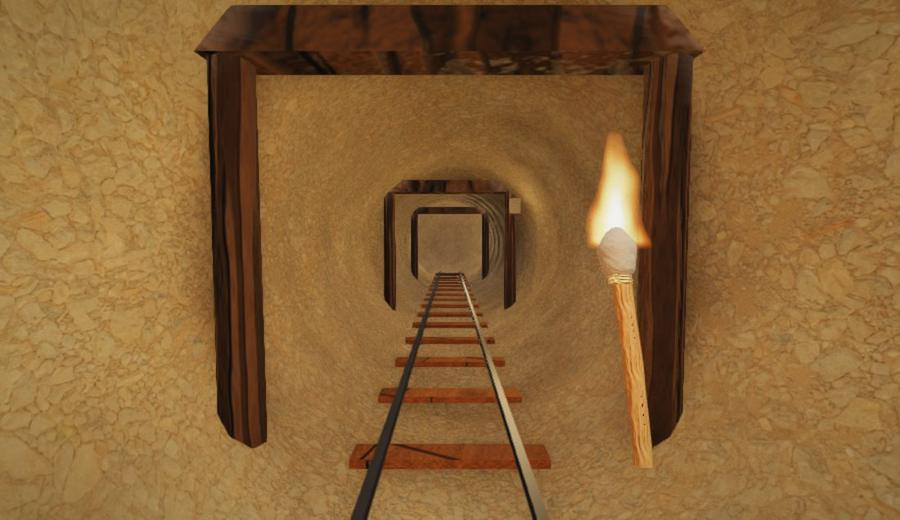
1.0 – 1.4Il mondo si allarga
22 ottobre 2026
Biomi, villaggi, missioni, nemici: nasce l’avventura.
- Mondi multipli (esporta e importa), modalità creativa, vento regolabile da 0 a 10.
- Biomi: pianura, foresta, foresta pluviale, giungla, deserto, montagne innevate.
- Barca a remi con due remi veri, piccolo veliero con ponte calpestabile; canoa, catamarano e galeone da sbloccare con i progetti.
- Villaggi diversi per bioma (coloniali, case sugli alberi, palafitte, fattorie, baite, borghi di pietra), fari, relitti, covi dei pirati.
- Abitanti con dialoghi, missioni a stelle, mercanti in dobloni, locande, mappa che si disegna esplorando, diario, oggetti rari, mappe del tesoro.
- Nemici (pirati, lupi, orsi, giaguari, serpenti, coccodrilli, squali), disattivabili; arco, pistola, lancia e sciabola.
- Codice partita per giocare insieme via internet.
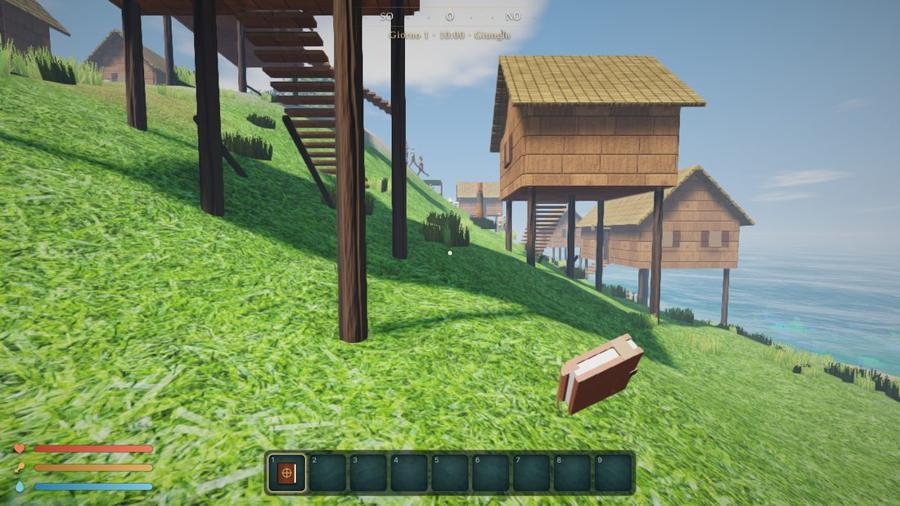
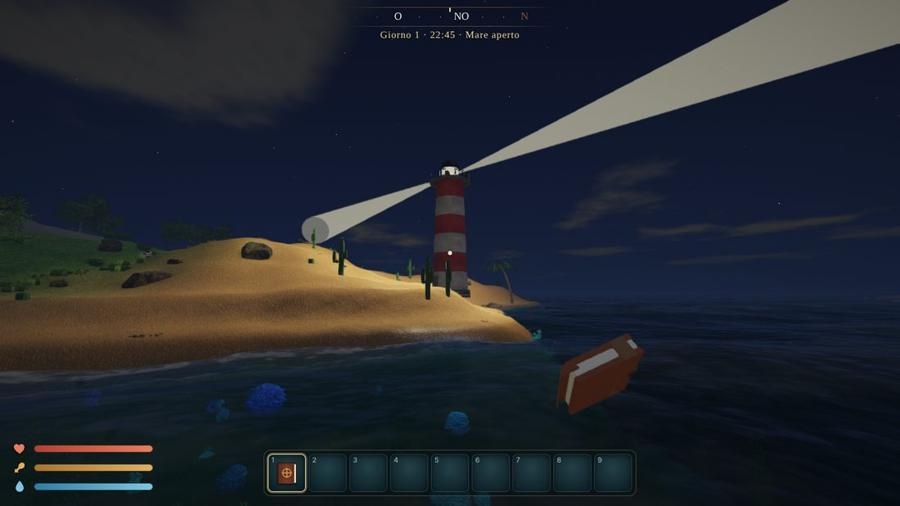
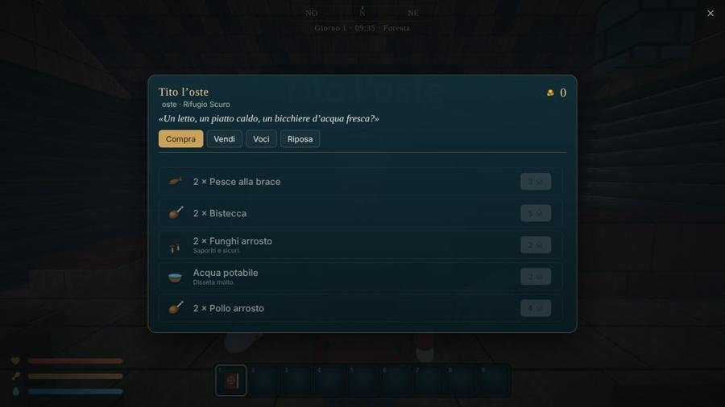
0.2Un gioco vero
21 ottobre 2026
Da pagina del browser a programma per Windows, con gli amici.
- Deriva.exe per Windows.
- Multigiocatore fino a 4 giocatori, nome a scelta, fuoco amico, FPS e ping.
- Grafica fotorealistica: texture fotografiche e modelli scansionati di rocce, scogliere, felci, funghi e alberi.
0.1Il naufragio
21 ottobre 2026
Il primo prototipo: un’isola, il mare e una zattera da costruire.
- Mondo in prima persona: isola tropicale, spiaggia, mare con onde e barriera corallina.
- Raccolta di legno, pietra e fibra; inventario con creazione 3×3 e banco da lavoro 5×5.
- Libro del costruttore: si traccia la sagoma della barca sul mare e la si monta pezzo per pezzo.
- Zattera e barca a vela; fame e sete; giorno e notte; animali e pesci.